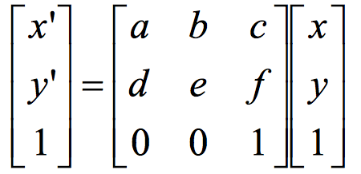

George Clooney morphing into Barack Obama
By: Alex Pan
A morph is a simultaneous warp of the image shape and a cross-dissolve of the image colors. In this project, we will work to smoothly morph between two faces. We will also explore how face shape and color can be used to create an 'average face'.
Warping, as described above, is a two step process. Cross dissolving the image colors is the easy part, so we will discuss how to warp image shapes. Contents in images obvously can't match up exactly, so it is necessary to define feature points to create a smooth morph. These feature points, or correspondences, match up the two images' features and allow them to transform into each other. Given correspondences, we can create a triangular mesh for the image. When we do the actual warping later on, triangles in one image will turn into the corresponding triangles in the other image. We use a Delauney triangulation since it produces evenly sized triangles.
Picture of me
Correspondences
Triangular mesh
To morph between the images, we need to define one triangulation that we will use for every step of the morph. In order to get the best triangulation throughout the morph, we will compute the Delaunay triangulation on the mid-way face: the mean of the two correspondence point sets. This will prevent potential triangle deformations, since the triangles will be evenly shaped in the middle of the warp.
Now, we will perform an inverse warp from the midway triangles to each original image's triangles. We do this by solving for the constants in the equation below. Since each triangle has three points, we can create a system of equation with six equations by using each x,y triangle point. The resulting matrix is the affine transformation matrix, which transforms one image's triangles into another.
Now that we know how to get affine matrices, we get the affine matrix for every triangle in the triangulation. We have a 'from' image that we want to morph into a 'to' image. For each pixel in the 'from' image, we find the triangle that it belongs in and that triangle's affine matrix. We then use it to calculate the new pixel's location if it were shaped like the 'to' image. The result of this will give us a morphed image. Below, we will show examples of two images and the result when we morph them into the 'mid-way' face.
Me
Jeremy Lin
Our 'Mid-way' face
Me
Jeremy Lin
Our 'Mid-way' face
Now, we can create a smooth transition between the two images. We do this by defining a warp fraction and dissolve fraction, specifying how much of each picture to preserve in that step of the morph. Our morph consists of 45 frames, with the fraction in each frame being 0/45, 1/45, 2/45, and so on. Below, we will show the full morph sequence of the two examples we morphed above, in GIF format.
Me morphing into Jeremy Lin
George Clooney morphing into Barack Obama
Using the 'mid-way' image concept described above, we can compute the average of not just two images, but a whole dataset. For this project, we will use this sample database of Danish faces as our population. First, we will compute the average face shape of the subset of all Danish males (shown below).
Humans equate symmetry with beauty, so naturally the average face will be quite attractive. Below are a few samples of individual faces from the dataset. As you can tell, each person is quite unique and look nothing like the average face. When we morph each of the faces into the average shape, we can see which features of the face are prevalent or not prevalent throughout the whole population.
Same Male 1
Sample Male 2
Sample Male 3
Same Male 1 (warped)
Sample Male 2 (warped)
Sample Male 3 (warped)
We can use the results from the Danish dataset to morph my face as well. Here are two results when I apply morphing techniques to my face and the average Danish male face.
My normal face
The average Danish male face
My face warped to the average Danish male face shape
The average Danish male face warped to my face shape
We can use these images to quantify the differences between our face shapes. My face is a bit wider and my eyes are a bit lower than the average Danish face. When I am morphed to the Danish shape, it is easy to see that my face appears thinner and my eyes stretch upwards. The opposite is true when the Danish face is morphed into my shape.
By extrapolating from the population mean we calculated before, we can exaggerate certain features and emphasize them as much as we want. We do this by finding the difference between our image shape and the mean shape, scaling it by a certain factor, and adding it back the the original mean shape. We extrapolate by setting the scaling factor (a) to be anything larger than 1, and the morph into the resulting shape will result in a caricature of our face. Here is the formula: caricature_shape = mean_shape + a * (image_shape - mean_shape). Below are some results of caricatures of my face using the mean Danish face.
My normal face
Caricature of my face with a = 2
Caricature of my face with a = 3
The differences between the faces that we mentioned before (wider face, lower eyes) are even more pronounced than they were before. As you can see, the caricature becomes increasingly exaggerated as the scaling factor increases.
Now that we know how to do all of these cool things, let's apply our morphing techniques to generate some cool results! More specifically, we will see what I look like as an African-American female. Below are results of morphing just shape, color, and both. See which technique creates the most realistic output!
My face
The average African American female
Morphing just my face shape to the average shape
Morphing just my face appearance to the average appearance
Morphing both color and shape to the average